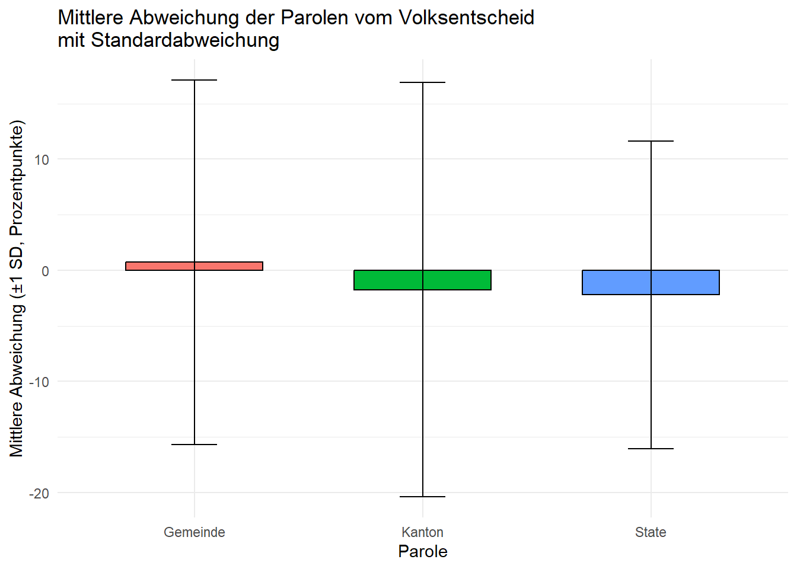
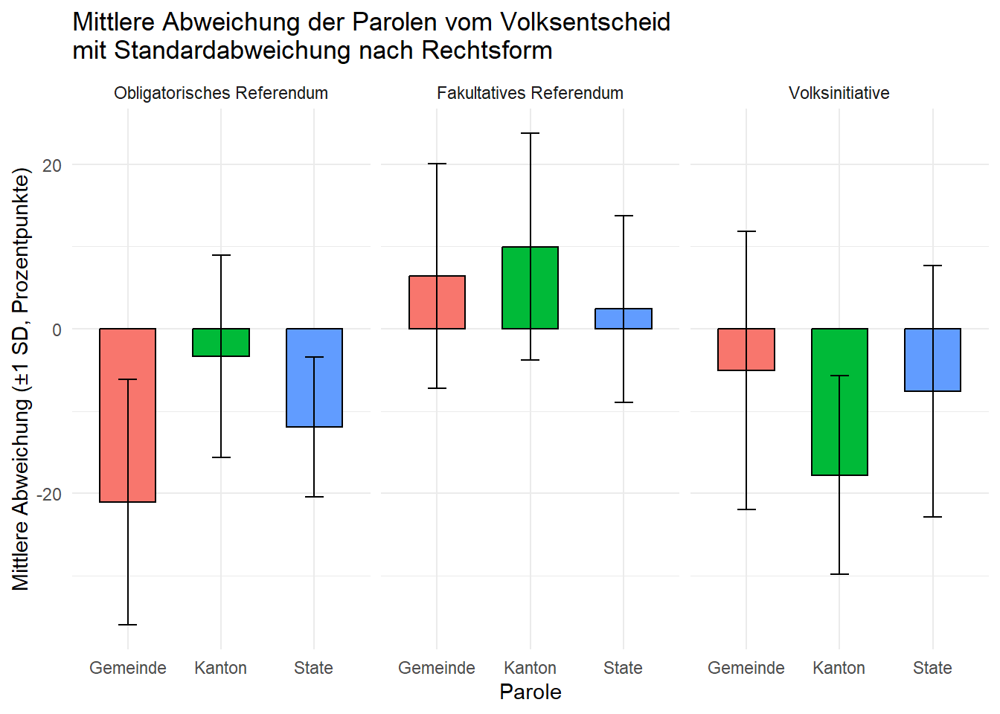
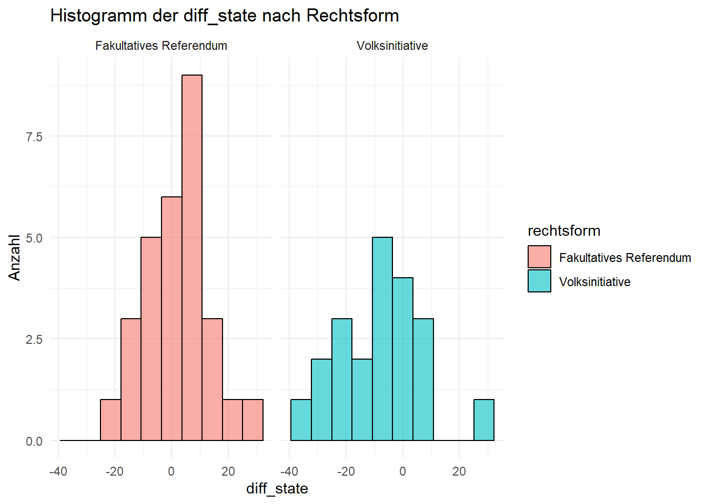
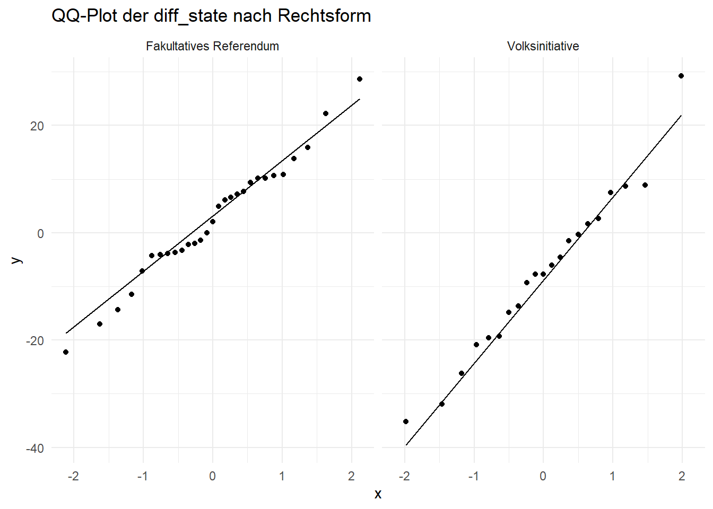

library(readr)library(readxl)library(pxmake) # to load PX fileslibrary(pxR) # to load PX fileslibrary(jsonlite) # to load JSON fileslibrary(purrr)library(writexl) # Write Excel fileslibrary(flextable) # Tables for Wordlibrary(officer) # Tables for Wordlibrary(effects)library(ggplot2) # Diagramslibrary(ggforce) # Diagramslibrary(corrplot) # Korrelationlibrary(ggcorrplot)library(reshape2)library(car)library(e1071)library(MASS)library(pscl)library(pROC)library(GGally) # Diagrams / Korrelationlibrary(plotly) # Diagramslibrary(DT) # datatable()library(DescTools)library(tidyr)library(tidyverse)library(dplyr) # am Schluss laden, u.a. select() greift sonst aufs falsche
2 Functions
Code anzeigen
### ########################################################## Duplikate in df finden & als $unique oder $duplicates selektionierbar machenfind_and_remove_duplicates <-function(df) {list(unique = df[!duplicated(df), ],duplicates = df[duplicated(df) |duplicated(df, fromLast =TRUE), ] )}### ########################################################## Aktive National- & Ständeräte identifizieren und selektionierbar machenfilter_active <-function(data, von, bis) { von <-as.Date(von) bis <-as.Date(bis) data %>%filter( DateJoining <= bis, # Eintritt vor/am Ende d. Zeitraumsis.na(DateLeaving) | DateLeaving >= von # Kein Austritt/nach Beginn des Z.. )}
3ETL: Extract, Transform, Load
Daten werden aus verschiedenen Excel-Dateien ausgelesen, unabhängig davon, wie komplex oder verschachtelt sie sind (z. B. mehrere Sheets, verbundene Zellen, unterteilte Datenblöcke).
Bei Excel-Dateien mit mehreren Sheets werden Functions angewendet.
Header werden identifiziert und ggf. aus mehreren Zeilen zusammengesetzt.
Daten werden bereinigt, normalisiert und in das gewünschte Zielformat gebracht (z. B. Wide zu Long, Entfernen von Leerzeilen, Auflösen von verbundenen Zellen, Vereinheitlichung der Spaltenstruktur).
Die transformierten Daten werden für die weitere Analyse und Visualisation zu Verfügung gestellt.
# National- und Ständratssitze pro Partei und Jahrelec_nr_sr_combined
# A tibble: 4,173 × 5
role party_orig_value year election_year n_seats
<chr> <chr> <chr> <chr> <dbl>
1 Nationalrat BDP 1919 1919 NA
2 Nationalrat BDP 1920 1919 NA
3 Nationalrat BDP 1921 1919 NA
4 Nationalrat BDP 1922 1922 NA
5 Nationalrat BDP 1923 1922 NA
6 Nationalrat BDP 1924 1922 NA
7 Nationalrat BDP 1925 1925 NA
8 Nationalrat BDP 1926 1925 NA
9 Nationalrat BDP 1927 1925 NA
10 Nationalrat BDP 1928 1928 NA
# ℹ 4,163 more rows
Code anzeigen
#TODO: Clean-up evt. einmal nach ganzem load.# Clean-up: Nicht mehr benötigte "election" Tabellen löschenrm(list =ls(pattern ="^elec_")[ # Objekte die mit elec_ starten aber nicht!grepl("(_combined|_combined_sum_check)$", # auf all_combined oder all_final endenls(pattern ="^elec_"))])
# A tibble: 26 × 7
party_orig_value short_name long_name prefix add_info level source
<chr> <chr> <chr> <chr> <lgl> <chr> <chr>
1 BDP BDP <NA> <NA> NA <NA> National_und_Stä…
2 CSP CSP <NA> <NA> NA <NA> National_und_Stä…
3 CVP CVP <NA> <NA> NA <NA> National_und_Stä…
4 DEM. DEM <NA> <NA> NA <NA> National_und_Stä…
5 DIE MITTE MITTE <NA> <NA> NA <NA> National_und_Stä…
6 EDU EDU <NA> <NA> NA <NA> National_und_Stä…
7 EVP EVP <NA> <NA> NA <NA> National_und_Stä…
8 FDP FDP <NA> <NA> NA <NA> National_und_Stä…
9 FGA FGA <NA> <NA> NA <NA> National_und_Stä…
10 FPS FPS <NA> <NA> NA <NA> National_und_Stä…
11 GLP GLP <NA> <NA> NA <NA> National_und_Stä…
12 GRÜNE GRÜNE <NA> <NA> NA <NA> National_und_Stä…
13 LPS LPS <NA> <NA> NA <NA> National_und_Stä…
14 LDU LDU <NA> <NA> NA <NA> National_und_Stä…
15 LEGA LEGA <NA> <NA> NA <NA> National_und_Stä…
16 MCR MCR <NA> <NA> NA <NA> National_und_Stä…
17 POCH POCH <NA> <NA> NA <NA> National_und_Stä…
18 PSA PSA <NA> <NA> NA <NA> National_und_Stä…
19 PDA PDA <NA> <NA> NA <NA> National_und_Stä…
20 REP. REP <NA> <NA> NA <NA> National_und_Stä…
21 SD SD <NA> <NA> NA <NA> National_und_Stä…
22 SP SP <NA> <NA> NA <NA> National_und_Stä…
23 SVP SVP <NA> <NA> NA <NA> National_und_Stä…
24 SOL. SOL <NA> <NA> NA <NA> National_und_Stä…
25 ÜBRIGE ÜBRIGE <NA> <NA> NA <NA> National_und_Stä…
26 MCG (MCR) MCG <NA> <NA> NA <NA> National_und_Stä…
3.2.2 Kantonsebene - Kantonale Regierung (Exekutive)
Die Kantonalen Abstimmungen finden nicht in allen kantonen gleichzeitg statt. Deshalb genauer die Räte/Konstellation zum Zeitpunkt der jeweiligen Abstimmung zu prüfen.
Die Struktur der “schön formatierten” Exceldatei lässt keinen “simplen” Import zu.
1 Excelsheet / Jahr
Header ist in Zeile 2 und nicht vollständig
Daten (für Kantone) starten in Zeile 4 aber enden auf Zeile 29 bevor es mit Kommentaren und Fussnoten weitergeht.
3.2.2.1 Dateipfad und gewünschte Sheets definieren
3.2.2.3 Function ausführen & Konsolidation aus Datenliste
Code anzeigen
# Objekt erstellen, mit Sheets als tibble/dataframedaten_liste <-setNames(lapply(selected_sheets,function(sheet) import_election_data (dateipfad, sheet)), selected_sheets)str(daten_liste)
List of 7
$ 2025: tibble [494 × 4] (S3: tbl_df/tbl/data.frame)
..$ Kanton : chr [1:494] "Zürich" "Zürich" "Zürich" "Zürich" ...
..$ Wahljahr: num [1:494] 2023 2023 2023 2023 2023 ...
..$ Partei : chr [1:494] "FDP 2" "SP" "SVP" "LP 2" ...
..$ Wert : num [1:494] 1 1 2 NA 0 NA 0 1 NA NA ...
$ 2024: tibble [494 × 4] (S3: tbl_df/tbl/data.frame)
..$ Kanton : chr [1:494] "Zürich" "Zürich" "Zürich" "Zürich" ...
..$ Wahljahr: num [1:494] 2023 2023 2023 2023 2023 ...
..$ Partei : chr [1:494] "FDP 2" "SP" "SVP" "LP 2" ...
..$ Wert : num [1:494] 1 1 2 NA 0 NA 0 1 NA NA ...
$ 2023: tibble [494 × 4] (S3: tbl_df/tbl/data.frame)
..$ Kanton : chr [1:494] "Zürich" "Zürich" "Zürich" "Zürich" ...
..$ Wahljahr: num [1:494] 2023 2023 2023 2023 2023 ...
..$ Partei : chr [1:494] "FDP 2)" "SP" "SVP" "LP 2)" ...
..$ Wert : num [1:494] 1 1 2 NA 0 NA 0 1 NA NA ...
$ 2022: tibble [494 × 4] (S3: tbl_df/tbl/data.frame)
..$ Kanton : chr [1:494] "Zürich" "Zürich" "Zürich" "Zürich" ...
..$ Wahljahr: num [1:494] 2019 2019 2019 2019 2019 ...
..$ Partei : chr [1:494] "FDP 2)" "SP" "SVP" "LP 2)" ...
..$ Wert : num [1:494] 1 1 2 NA 0 NA NA NA 1 0 ...
$ 2021: tibble [494 × 4] (S3: tbl_df/tbl/data.frame)
..$ Kanton : chr [1:494] "Zürich" "Zürich" "Zürich" "Zürich" ...
..$ Wahljahr: num [1:494] 2019 2019 2019 2019 2019 ...
..$ Partei : chr [1:494] "FDP 2)" "SP" "SVP" "LP 2)" ...
..$ Wert : num [1:494] 1 1 2 NA 0 NA NA NA 1 0 ...
$ 2020: tibble [780 × 4] (S3: tbl_df/tbl/data.frame)
..$ Kanton : chr [1:780] "Zürich" "Zürich" "Zürich" "Zürich" ...
..$ Wahljahr: num [1:780] 2019 2019 2019 2019 2019 ...
..$ Partei : chr [1:780] "FDP 2)" "CVP 3)" "SP" "SVP" ...
..$ Wert : num [1:780] 1 1 1 2 NA NA NA 0 NA NA ...
$ 2019: tibble [780 × 4] (S3: tbl_df/tbl/data.frame)
..$ Kanton : chr [1:780] "Zürich" "Zürich" "Zürich" "Zürich" ...
..$ Wahljahr: num [1:780] 2019 2019 2019 2019 2019 ...
..$ Partei : chr [1:780] "FDP 2)" "CVP 3)" "SP" "SVP" ...
..$ Wert : num [1:780] 1 1 2 2 NA NA NA 0 NA NA ...
Code anzeigen
# Alle tibbles zu einem Dataframe zusammenfügenelec_canton_combined <-bind_rows(daten_liste,.id ="year") %>%rename(election_year = Wahljahr,party_orig_value = Partei,n_seats = Wert) %>%mutate(role ="Kantonsregierung",election_year =as.character(election_year)) %>%filter(party_orig_value !="Total") %>%left_join(lookup_kantone, by ="Kanton") %>%select(role, party_orig_value, year, election_year, n_seats, Kt, Kanton,everything())
3.2.2.4 Ergebnis Kantonsregierung
Code anzeigen
# Ratssitze pro Jahr (nach-)prüfenelec_canton_combined_sum_check <- elec_canton_combined %>%group_by(year, role) %>%summarise(total_n_seats =sum(n_seats,na.rm =TRUE),.groups ="drop") %>%print(n=Inf)
# National- und Ständratssitze pro Partei und Jahrelec_canton_combined
# A tibble: 3,848 × 7
role party_orig_value year election_year n_seats Kt Kanton
<chr> <chr> <chr> <chr> <dbl> <chr> <chr>
1 Kantonsregierung FDP 2 2025 2023 1 ZH Zürich
2 Kantonsregierung SP 2025 2023 1 ZH Zürich
3 Kantonsregierung SVP 2025 2023 2 ZH Zürich
4 Kantonsregierung LP 2 2025 2023 NA ZH Zürich
5 Kantonsregierung EVP 2025 2023 0 ZH Zürich
6 Kantonsregierung CSP 2025 2023 NA ZH Zürich
7 Kantonsregierung GLP 2025 2023 0 ZH Zürich
8 Kantonsregierung Die Mitte 3 2025 2023 1 ZH Zürich
9 Kantonsregierung CVP 3 2025 2023 NA ZH Zürich
10 Kantonsregierung BDP 3 2025 2023 NA ZH Zürich
# ℹ 3,838 more rows
Code anzeigen
#TODO: Clean-up evt. einmal nach ganzem load.# Clean-up: Nicht mehr benötigte "election" Tabellen löschenrm(list =ls(pattern ="^elec_")[ # Objekte die mit elec_ starten aber nicht!grepl("(_combined|_combined_sum_check)$", # auf all_combined oder all_final endenls(pattern ="^elec_"))])# datatable(elec_kantonale_regierung_combined,# class = 'nowrap',# filter = 'top',# options = list(pageLength = 7,# scrollX = TRUE,# search = list(regex = TRUE,# caseInsensitive = TRUE)))
3.2.3.4 Function ausführen & Konsolidation aus Datenliste
Code anzeigen
# Objekt erstellen, mit Sheets als tibble/dataframedaten_liste <-setNames(lapply(selected_sheets,function(sheet) importiere_sheet(dateipfad, sheet)), selected_sheets)str(daten_liste)
List of 6
$ 2024: tibble [7,515 × 10] (S3: tbl_df/tbl/data.frame)
..$ Kantons-Nr. : chr [1:7515] "1" "1" "1" "1" ...
..$ Kanton : chr [1:7515] "ZH" "ZH" "ZH" "ZH" ...
..$ Gemeinde-Nr. : num [1:7515] 230 230 230 230 230 230 230 230 230 230 ...
..$ Gemeinde : chr [1:7515] "Winterthur" "Winterthur" "Winterthur" "Winterthur" ...
..$ Wahljahr : num [1:7515] 2022 2022 2022 2022 2022 ...
..$ Einwohner : num [1:7515] 115129 115129 115129 115129 115129 ...
..$ Gemeindegrösse_Cluster: chr [1:7515] "≥ 100'000 Einwohnerinnen und Einwohner" "≥ 100'000 Einwohnerinnen und Einwohner" "≥ 100'000 Einwohnerinnen und Einwohner" "≥ 100'000 Einwohnerinnen und Einwohner" ...
..$ party_orig_value : chr [1:7515] "FDP 1" "FDP 1" "FDP 1" "Die Mitte 2" ...
..$ m_w_Total : chr [1:7515] "Frauen" "Männer" "Total" "Frauen" ...
..$ Wert : num [1:7515] 0 1 1 0 1 1 NA NA NA 1 ...
$ 2023: tibble [7,776 × 10] (S3: tbl_df/tbl/data.frame)
..$ Kantons-Nr. : chr [1:7776] "1" "1" "1" "1" ...
..$ Kanton : chr [1:7776] "ZH" "ZH" "ZH" "ZH" ...
..$ Gemeinde-Nr. : num [1:7776] 230 230 230 230 230 230 230 230 230 230 ...
..$ Gemeinde : chr [1:7776] "Winterthur" "Winterthur" "Winterthur" "Winterthur" ...
..$ Wahljahr : num [1:7776] 2022 2022 2022 2022 2022 ...
..$ Einwohner : num [1:7776] 115129 115129 115129 115129 115129 ...
..$ Gemeindegrösse_Cluster: chr [1:7776] "≥ 100'000 Einwohnerinnen und Einwohner" "≥ 100'000 Einwohnerinnen und Einwohner" "≥ 100'000 Einwohnerinnen und Einwohner" "≥ 100'000 Einwohnerinnen und Einwohner" ...
..$ party_orig_value : chr [1:7776] "FDP 1" "FDP 1" "FDP 1" "Die Mitte 2" ...
..$ m_w_Total : chr [1:7776] "Frauen" "Männer" "Total" "Frauen" ...
..$ Wert : num [1:7776] 0 1 1 0 1 1 NA NA NA 1 ...
$ 2022: tibble [7,776 × 10] (S3: tbl_df/tbl/data.frame)
..$ Kantons-Nr. : chr [1:7776] "1" "1" "1" "1" ...
..$ Kanton : chr [1:7776] "ZH" "ZH" "ZH" "ZH" ...
..$ Gemeinde-Nr. : num [1:7776] 230 230 230 230 230 230 230 230 230 230 ...
..$ Gemeinde : chr [1:7776] "Winterthur" "Winterthur" "Winterthur" "Winterthur" ...
..$ Wahljahr : num [1:7776] 2022 2022 2022 2022 2022 ...
..$ Einwohner : num [1:7776] 115129 115129 115129 115129 115129 ...
..$ Gemeindegrösse_Cluster: chr [1:7776] "≥ 100'000 Einwohnerinnen und Einwohner" "≥ 100'000 Einwohnerinnen und Einwohner" "≥ 100'000 Einwohnerinnen und Einwohner" "≥ 100'000 Einwohnerinnen und Einwohner" ...
..$ party_orig_value : chr [1:7776] "FDP 1" "FDP 1" "FDP 1" "Die Mitte 2" ...
..$ m_w_Total : chr [1:7776] "Frauen" "Männer" "Total" "Frauen" ...
..$ Wert : num [1:7776] 0 1 1 0 1 1 NA NA NA 1 ...
$ 2021: tibble [7,776 × 10] (S3: tbl_df/tbl/data.frame)
..$ Kantons-Nr. : chr [1:7776] "1" "1" "1" "1" ...
..$ Kanton : chr [1:7776] "ZH" "ZH" "ZH" "ZH" ...
..$ Gemeinde-Nr. : num [1:7776] 230 230 230 230 230 230 230 230 230 230 ...
..$ Gemeinde : chr [1:7776] "Winterthur" "Winterthur" "Winterthur" "Winterthur" ...
..$ Wahljahr : num [1:7776] 2018 2018 2018 2018 2018 ...
..$ Einwohner : num [1:7776] 110912 110912 110912 110912 110912 ...
..$ Gemeindegrösse_Cluster: chr [1:7776] "≥ 100'000 Einwohnerinnen und Einwohner" "≥ 100'000 Einwohnerinnen und Einwohner" "≥ 100'000 Einwohnerinnen und Einwohner" "≥ 100'000 Einwohnerinnen und Einwohner" ...
..$ party_orig_value : chr [1:7776] "FDP 1" "FDP 1" "FDP 1" "Die Mitte 2" ...
..$ m_w_Total : chr [1:7776] "Frauen" "Männer" "Total" "Frauen" ...
..$ Wert : num [1:7776] 1 1 2 NA NA NA 0 1 1 2 ...
$ 2020: tibble [7,290 × 10] (S3: tbl_df/tbl/data.frame)
..$ Kantons-Nr. : chr [1:7290] "1" "1" "1" "1" ...
..$ Kanton : chr [1:7290] "ZH" "ZH" "ZH" "ZH" ...
..$ Gemeinde-Nr. : num [1:7290] 230 230 230 230 230 230 230 230 230 230 ...
..$ Gemeinde : chr [1:7290] "Winterthur" "Winterthur" "Winterthur" "Winterthur" ...
..$ Wahljahr : num [1:7290] 2018 2018 2018 2018 2018 ...
..$ Einwohner : num [1:7290] 110912 110912 110912 110912 110912 ...
..$ Gemeindegrösse_Cluster: chr [1:7290] "≥ 100'000 Einwohnerinnen und Einwohner" "≥ 100'000 Einwohnerinnen und Einwohner" "≥ 100'000 Einwohnerinnen und Einwohner" "≥ 100'000 Einwohnerinnen und Einwohner" ...
..$ party_orig_value : chr [1:7290] "FDP 1)" "FDP 1)" "FDP 1)" "CVP" ...
..$ m_w_Total : chr [1:7290] "Frauen" "Männer" "Total" "Frauen" ...
..$ Wert : num [1:7290] 1 1 2 0 1 1 2 1 3 NA ...
$ 2019: tibble [14,580 × 11] (S3: tbl_df/tbl/data.frame)
..$ Kantons-Nr. : chr [1:14580] "1" "1" "1" "1" ...
..$ Kanton : chr [1:14580] "ZH" "ZH" "ZH" "ZH" ...
..$ Gemeinde-Nr. : num [1:14580] 230 230 230 230 230 230 230 230 230 230 ...
..$ Gemeinde : chr [1:14580] "Winterthur" "Winterthur" "Winterthur" "Winterthur" ...
..$ Einwohner : num [1:14580] 111851 111851 111851 111851 111851 ...
..$ Grössenklasse-Nr. : chr [1:14580] "4" "4" "4" "4" ...
..$ Grössenklasse : chr [1:14580] "≥ 100'000 Einwohnerinnen und Einwohner" "≥ 100'000 Einwohnerinnen und Einwohner" "≥ 100'000 Einwohnerinnen und Einwohner" "≥ 100'000 Einwohnerinnen und Einwohner" ...
..$ Gemeindegrösse_Cluster: chr [1:14580] "≥ 100'000 Einwohnerinnen und Einwohner" "≥ 100'000 Einwohnerinnen und Einwohner" "≥ 100'000 Einwohnerinnen und Einwohner" "≥ 100'000 Einwohnerinnen und Einwohner" ...
..$ party_orig_value : chr [1:14580] "FDP 1)" "FDP 1)" "FDP 1)" "CVP" ...
..$ m_w_Total : chr [1:14580] "Frauen" "Männer" "Total" "Frauen" ...
..$ Wert : num [1:14580] 1 1 2 0 1 1 2 1 3 NA ...
Code anzeigen
# lapply(daten_liste, summary)# Alle tibbles zu einem Dataframe zusammenfügenelec_gemeinde_combined <-bind_rows(daten_liste,.id ="year") %>%filter(m_w_Total =="Total", party_orig_value !="Total") %>%rename(election_year = Wahljahr,n_seats = Wert,Kt = Kanton) %>%mutate(role ="Gemeindeexekutive",election_year =as.character(election_year)) %>%select(-c('Grössenklasse-Nr.', Grössenklasse,`Kantons-Nr.`, m_w_Total)) %>%left_join(lookup_kantone, by ="Kt") %>%select(role, party_orig_value, year, election_year, n_seats, Kt, Kanton,everything())# year in integer umwandelnelec_gemeinde_combined$year <-as.integer(as.character(elec_gemeinde_combined$year))# Fehlende Jahre ergänzencurrent_year <-as.integer(format(Sys.Date(), "%Y"))max_year <-max(elec_gemeinde_combined$year, na.rm =TRUE)if (max_year < current_year) {# Für jedes fehlende Jahrfor (y in (max_year+1):current_year) {# Letzte Werte kopieren und Jahr anpassen last_year_data <- elec_gemeinde_combined %>%filter(year == max_year) last_year_data$year <- y last_year_data$election_year <-as.character(y) elec_gemeinde_combined <-bind_rows(elec_gemeinde_combined, last_year_data) }}
3.2.3.5 Ergebnis Gemeinde bzw. Exekutiven statistischer Städte
Code anzeigen
# Ratssitze pro Jahr (nach-)prüfenelec_gemeinde_combined_sum_check <- elec_gemeinde_combined %>%group_by(year) %>%# Gruppieren nach Jahrsummarise(summe =sum(n_seats, na.rm =TRUE)) # Summe berechnen, NAs ignorieren#TODO: Clean-up evt. einmal nach ganzem load.# Clean-up: Nicht mehr benötigte "election" Tabellen löschenrm(list =ls(pattern ="^elec_")[ # Objekte die mit elec_ starten aber nicht!grepl("(_combined|_combined_sum_check)$", # auf all_combined oder all_final endenls(pattern ="^elec_"))])# TODO Grosses Datatable, deshalb auskommentieren oder ander Lösung..# datatable(elec_gemeinde_exekutiven_combined,# class = 'nowrap',# filter = 'top',# options = list(pageLength = 7,# scrollX = TRUE,# search = list(regex = TRUE,# caseInsensitive = TRUE)))
3.2.4 Listen aller Staatsebenen konsolidieren & einheitliche Parteinamen joinen
Code anzeigen
# In allen Dataframes die year-Spalte vereinheitlichenelec_nr_sr_combined$year <-as.integer(as.character(elec_nr_sr_combined$year))elec_canton_combined$year <-as.integer(as.character(elec_canton_combined$year))elec_gemeinde_combined$year <-as.integer(as.character(elec_gemeinde_combined$year))lookup_parties_consolidated %>% dplyr::count(party_orig_value) %>%filter(n >1)
# A tibble: 0 × 2
# ℹ 2 variables: party_orig_value <chr>, n <int>
# A tibble: 561 × 9
Partei Parteiname party_orig_value short_name long_name prefix add_info level
<chr> <chr> <chr> <chr> <lgl> <chr> <chr> <chr>
1 OTHERS Andere (S… p-others_counte… OTHERS NA p counterp state
2 OTHERS Andere (S… p-others_counte… OTHERS NA p counter… state
3 OTHERS Andere (S… p-others_free OTHERS NA p free state
4 OTHERS Andere (S… p-others_free-fr OTHERS NA p free-fr state
5 OTHERS Andere (S… p-others_init OTHERS NA p init state
6 OTHERS Andere (S… p-others_init-fr OTHERS NA p init-fr state
7 OTHERS Andere (S… p-others_no OTHERS NA p no state
8 OTHERS Andere (S… p-others_no-fr OTHERS NA p no-fr state
9 OTHERS Andere (S… p-others_yes OTHERS NA p yes state
10 OTHERS Andere (S… p-others_yes-fr OTHERS NA p yes-fr state
# ℹ 551 more rows
# ℹ 1 more variable: source <chr>
# Clean-up entfernt Objekte die mit "elec_" starten, ausser bei Endung auf# "_all_combined" oder "_all_final"rm(list =ls(pattern ="^elec_")[ # Objekte die mit elec_ starten aber nicht!grepl("(_all_combined|_all_final)$", # auf all_combined oder all_final endenls(pattern ="^elec_"))])
3.2.6 Parteistärken berechnen - Sitze aggregiert auf Staatsebene
3.2.6.1 Jahre eingrenzen
Code anzeigen
##DATUMSFILTER### Jahre eingrenzenelec_all_combined_input <- elec_all_combined %>%filter(year >="2019")
3.2.6.2 Dataframes vereinheitlichen und ggfs. aggregieren
3.2.6.2.1 Staatsebene: National- und Ständerat “as is”
df_overview <-function(df_name) { df <-get(df_name)cat("====", df_name, "====\n")cat("Anzahl Zeilen:", nrow(df), "\n")cat("Anzahl Spalten:", ncol(df), "\n")cat("Spaltennamen:\n")print(names(df))# Dynamische Sortierung: Nur vorhandene Spalten werden verwendet sort_cols <-c() sort_orders <-c()# 1) Nach year (aufsteigend)if ("year"%in%names(df)) { df$year <-as.numeric(df$year) sort_cols <-c(sort_cols, "year") sort_orders <-c(sort_orders, TRUE) # TRUE = aufsteigend }# 2) Nach Gemeinde (alphabetisch)if ("Gemeinde"%in%names(df)) { sort_cols <-c(sort_cols, "Gemeinde") sort_orders <-c(sort_orders, TRUE) }# 3) Kt (alphabetisch)if ("Kt"%in%names(df)) { sort_cols <-c(sort_cols, "Kt") sort_orders <-c(sort_orders, TRUE) }# 4) n_seats_sum (absteigend)if ("n_seats_sum"%in%names(df)) { df$n_seats_sum <-as.numeric(df$n_seats_sum) sort_cols <-c(sort_cols, "n_seats_sum") sort_orders <-c(sort_orders, FALSE) # FALSE = absteigend }# Sortiere Dataframe, falls mindestens eine Sortierspalte vorhanden istif (length(sort_cols) >0) {# Erzeuge eine Liste von Spalten für do.call(order, ...) order_args <-lapply(seq_along(sort_cols), function(i) { col <- df[[sort_cols[i]]]if (!sort_orders[i]) -col else col }) df <- df[do.call(order, order_args), ] }# Prüfung auf gültige Zahlen in n_seats_sumif ("n_seats_sum"%in%names(df)) { valid_rows <-!is.na(df$n_seats_sum) &is.finite(as.numeric(df$n_seats_sum))if (any(!valid_rows)) { last_valid_row <-which(!valid_rows)[1] -1 } else { last_valid_row <-nrow(df) } rows_to_show <-1:max(1, last_valid_row)cat("Zeilen mit Zahlen in 'n_seats_sum' (sortiert):\n")print(df[rows_to_show, , drop =FALSE]) } else {cat("Erste 3 Zeilen:\n")print(head(df, 3)) }cat("\n\n")}
3.2.7.2 df für Übersicht definieren und Function ausführen
Code anzeigen
# Liste der Dataframesdf_names <-c("elec_gemeinde_lvl_gemeinde","elec_gemeinde_lvl_kt","elec_gemeinde_lvl_state","elec_kanton_lvl_kt","elec_kanton_lvl_state","elec_nr_sr_lvl_state")# Übersicht für alle Dataframes erstellenfor (name in df_names) {df_overview(name)}
==== elec_gemeinde_lvl_gemeinde ====
Anzahl Zeilen: 4637
Anzahl Spalten: 5
Spaltennamen:
[1] "year" "Gemeinde" "Partei" "n_seats_sum" "n_seats_pct"
Zeilen mit Zahlen in 'n_seats_sum' (sortiert):
# A tibble: 4,637 × 5
year Gemeinde Partei n_seats_sum n_seats_pct
<dbl> <chr> <chr> <dbl> <dbl>
1 2019 Aarau FDP 2 28.6
2 2019 Aarau SP 2 28.6
3 2019 Aarau CVP 1 14.3
4 2019 Aarau GRÜNE 1 14.3
5 2019 Aarau ÜBRIGE 1 14.3
6 2019 Adliswil FDP 2 28.6
7 2019 Adliswil ÜBRIGE 2 28.6
8 2019 Adliswil CVP 1 14.3
9 2019 Adliswil SP 1 14.3
10 2019 Adliswil SVP 1 14.3
# ℹ 4,627 more rows
==== elec_gemeinde_lvl_kt ====
Anzahl Zeilen: 1083
Anzahl Spalten: 7
Spaltennamen:
[1] "year" "Kt" "Partei"
[4] "n_seats_sum" "n_seats_sum_weighted" "n_seats_pct"
[7] "n_seats_pct_weighted"
Zeilen mit Zahlen in 'n_seats_sum' (sortiert):
# A tibble: 1,083 × 7
year Kt Partei n_seats_sum n_seats_sum_weighted n_seats_pct
<dbl> <chr> <chr> <dbl> <dbl> <dbl>
1 2019 AG FDP 17 247929 25
2 2019 AG ÜBRIGE 15 219033 22.1
3 2019 AG SP 13 200875 19.1
4 2019 AG CVP 11 179675 16.2
5 2019 AG SVP 6 74557 8.82
6 2019 AG GRÜNE 4 60825 5.88
7 2019 AG GLP 2 25188 2.94
8 2019 AR ÜBRIGE 2 31490 28.6
9 2019 AR CVP 1 15745 14.3
10 2019 AR EVP 1 15745 14.3
# ℹ 1,073 more rows
# ℹ 1 more variable: n_seats_pct_weighted <dbl>
==== elec_gemeinde_lvl_state ====
Anzahl Zeilen: 103
Anzahl Spalten: 6
Spaltennamen:
[1] "year" "Partei" "n_seats_sum"
[4] "n_seats_sum_weighted" "n_seats_pct" "n_seats_pct_weighted"
Zeilen mit Zahlen in 'n_seats_sum' (sortiert):
# A tibble: 103 × 6
year Partei n_seats_sum n_seats_sum_weighted n_seats_pct
<dbl> <chr> <dbl> <dbl> <dbl>
1 2019 FDP 292 6410290 27.7
2 2019 SP 220 7087159 20.8
3 2019 CVP 162 3380882 15.3
4 2019 SVP 131 2152118 12.4
5 2019 ÜBRIGE 105 2003701 9.94
6 2019 GRÜNE 63 3023756 5.97
7 2019 GLP 29 1064924 2.75
8 2019 EVP 20 324771 1.89
9 2019 CSP 8 122063 0.758
10 2019 BDP 7 127311 0.663
# ℹ 93 more rows
# ℹ 1 more variable: n_seats_pct_weighted <dbl>
==== elec_kanton_lvl_kt ====
Anzahl Zeilen: 3848
Anzahl Spalten: 5
Spaltennamen:
[1] "year" "Kt" "Partei" "n_seats_sum" "n_seats_pct"
Zeilen mit Zahlen in 'n_seats_sum' (sortiert):
# A tibble: 3,848 × 5
year Kt Partei n_seats_sum n_seats_pct
<dbl> <chr> <chr> <dbl> <dbl>
1 2019 AG SVP 2 40
2 2019 AG CVP 1 20
3 2019 AG FDP 1 20
4 2019 AG SP 1 20
5 2019 AG BDP 0 0
6 2019 AG CSP 0 0
7 2019 AG DEM 0 0
8 2019 AG DSP 0 0
9 2019 AG EDU 0 0
10 2019 AG EVP 0 0
# ℹ 3,838 more rows
==== elec_kanton_lvl_state ====
Anzahl Zeilen: 148
Anzahl Spalten: 7
Spaltennamen:
[1] "year" "Partei"
[3] "n_seats_sum" "n_seats_sum_weighted"
[5] "stimmberechtigte_avg_state" "n_seats_pct"
[7] "n_seats_pct_weighted"
Zeilen mit Zahlen in 'n_seats_sum' (sortiert):
# A tibble: 148 × 7
year Partei n_seats_sum n_seats_sum_weighted stimmberechtigte_avg_state
<dbl> <chr> <dbl> <dbl> <dbl>
1 2019 FDP 39 211955133 5434747
2 2019 CVP 38 206520386 5434747
3 2019 SP 30 163042410 5434747
4 2019 SVP 24 130433928 5434747
5 2019 ÜBRIGE 8 43477976 5434747
6 2019 GRÜNE 7 38043229 5434747
7 2019 BDP 3 16304241 5434747
8 2019 LEGA 2 10869494 5434747
9 2019 CSP 1 5434747 5434747
10 2019 LP 1 5434747 5434747
# ℹ 138 more rows
# ℹ 2 more variables: n_seats_pct <dbl>, n_seats_pct_weighted <dbl>
==== elec_nr_sr_lvl_state ====
Anzahl Zeilen: 85
Anzahl Spalten: 4
Spaltennamen:
[1] "year" "Partei" "n_seats_sum" "n_seats_pct"
Zeilen mit Zahlen in 'n_seats_sum' (sortiert):
# A tibble: 85 × 4
year Partei n_seats_sum n_seats_pct
<dbl> <chr> <dbl> <dbl>
1 2019 SVP 59 24.0
2 2019 SP 48 19.5
3 2019 FDP 41 16.7
4 2019 CVP 38 15.4
5 2019 GRÜNE 33 13.4
6 2019 GLP 16 6.50
7 2019 BDP 3 1.22
8 2019 EVP 3 1.22
9 2019 EDU 1 0.407
10 2019 LEGA 1 0.407
# ℹ 75 more rows
# Clean-up: Nicht mehr benötigte "lookup" Tabellen löschenrm(list =ls(pattern ="^lookup_input")[ # mit lookup_input starten aber!grepl("(_combined|_master)$", # nicht mit _combined / all_final endenls(pattern ="^lookup_input"))])
ob und wie stark die Parolen der Parteien (auf Staats-, Kantons- und Gemeindeebene) mit dem Abstimmungsausgang zusammenhängen – insbesondere in Fällen, wo die Ja-Parole unter 50 % liegt, die Vorlage aber trotzdem angenommen wird (und umgekehrt).
Code anzeigen
# Fälle identifizieren: "Paradoxe" Abstimmungen# Annahme == 1, aber state_parole_Ja < 50 (und/oder die anderen Ebenen)# Annahme == 0, aber state_parole_Ja >= 50 (und/oder die anderen Ebenen)# Annahme als numerisch #TODO: OBSOLET?voting_5y_final$annahme <-as.numeric(voting_5y_final$annahme)# Fälle identifizierenparadoxe_faelle <- voting_5y_final %>%filter((annahme ==1& (state_parole_Ja <50| kt_parole_Ja <50| gemeinde_parole_Ja <50)) | (annahme ==0& (state_parole_Ja >=50| kt_parole_Ja >=50| gemeinde_parole_Ja >=50))) %>%select(anr, titel_kurz_d, annahme, state_parole_Ja, kt_parole_Ja, gemeinde_parole_Ja)
3.5.2.1 Varianz
Code anzeigen
# Abweichungen berechnenvoting_5y_final <- voting_5y_final %>%mutate(diff_state = state_parole_Ja - volkja_proz,diff_kanton = kt_parole_Ja - volkja_proz,diff_gemeinde = gemeinde_parole_Ja - volkja_proz)# Mittelwert und Standardabweichung der Abweichungen je Parole berechnensummary_stats_v1 <- voting_5y_final %>%summarise(mean_state =mean(diff_state),sd_state =sd(diff_state),mean_kanton =mean(diff_kanton),sd_kanton =sd(diff_kanton),mean_gemeinde =mean(diff_gemeinde),sd_gemeinde =sd(diff_gemeinde)) %>%pivot_longer(cols =everything(),names_to =c("stat","Parole"),names_sep ="_",values_to ="value") %>%pivot_wider(names_from = stat,values_from = value) %>%mutate(Parole = dplyr::recode(Parole,"state"="State","kanton"="Kanton","gemeinde"="Gemeinde"))# Visualisierung als Balkendiagramm mit Fehlerbalken (±1 SD)ggplot(summary_stats_v1,aes(x = Parole,y = mean,fill = Parole)) +geom_col(width =0.6,color ="black") +geom_errorbar(aes(ymin = mean - sd,ymax = mean + sd),width =0.2) +theme_minimal() +labs(title ="Mittlere Abweichung der Parolen vom Volksentscheid\nmit Standardabweichung",x ="Parole",y ="Mittlere Abweichung (±1 SD, Prozentpunkte)") +guides(fill ="none")

Code anzeigen
summary_stats_v1
# A tibble: 3 × 3
Parole mean sd
<chr> <dbl> <dbl>
1 State -2.20 13.8
2 Kanton -1.74 18.6
3 Gemeinde 0.722 16.4
3.5.2.2 Varianz gruppiert nach Rechtsform
Code anzeigen
# Abweichungen berechnenvoting_5y_final <- voting_5y_final %>%mutate(diff_state = state_parole_Ja - volkja_proz,diff_kanton = kt_parole_Ja - volkja_proz,diff_gemeinde = gemeinde_parole_Ja - volkja_proz)# Zusammenfassen nach "dep" gruppiertsummary_stats_v2 <- voting_5y_final %>%group_by(rechtsform) %>%summarise(mean_state =mean(diff_state),sd_state =sd(diff_state),mean_kanton =mean(diff_kanton),sd_kanton =sd(diff_kanton),mean_gemeinde =mean(diff_gemeinde),sd_gemeinde =sd(diff_gemeinde)) %>%pivot_longer(cols =-rechtsform,names_to =c("stat", "Parole"),names_sep ="_",values_to ="value") %>%pivot_wider(names_from = stat,values_from = value) %>%mutate(Parole = dplyr::recode(Parole,"state"="State","kanton"="Kanton","gemeinde"="Gemeinde"))# Visualisierung nach "dep"-Gruppeggplot(summary_stats_v2, aes(x = Parole, y = mean, fill = Parole)) +geom_col(width =0.6, color ="black") +geom_errorbar(aes(ymin = mean - sd, ymax = mean + sd), width =0.2) +facet_wrap(~ rechtsform) +theme_minimal() +labs(title ="Mittlere Abweichung der Parolen vom Volksentscheid\nmit Standardabweichung nach Rechtsform",x ="Parole",y ="Mittlere Abweichung (±1 SD, Prozentpunkte)") +guides(fill ="none")

Code anzeigen
summary_stats_v2
# A tibble: 9 × 4
rechtsform Parole mean sd
<fct> <chr> <dbl> <dbl>
1 Obligatorisches Referendum State -11.9 8.53
2 Obligatorisches Referendum Kanton -3.33 12.3
3 Obligatorisches Referendum Gemeinde -21.1 14.9
4 Fakultatives Referendum State 2.40 11.3
5 Fakultatives Referendum Kanton 9.97 13.8
6 Fakultatives Referendum Gemeinde 6.40 13.6
7 Volksinitiative State -7.62 15.3
8 Volksinitiative Kanton -17.8 12.0
9 Volksinitiative Gemeinde -5.04 16.9
3.5.2.3 Prüfung der Normalverteilung
3.5.2.3.1 Grafisch
Code anzeigen
# Nur die beiden großen Gruppen auswählengruppen <-c("Fakultatives Referendum", "Volksinitiative")df_sub <- voting_5y_final %>%filter(rechtsform %in% gruppen)# Histogramm mit Facet für jede Gruppeggplot(df_sub, aes(x = diff_state, fill = rechtsform)) +geom_histogram(color ="black", alpha =0.6, bins =10) +facet_wrap(~ rechtsform) +theme_minimal() +labs(title ="Histogramm der diff_state nach Rechtsform",x ="diff_state", y ="Anzahl")

Code anzeigen
# QQ-Plot für jede Gruppeggplot(df_sub, aes(sample = diff_state)) +stat_qq() +stat_qq_line() +facet_wrap(~ rechtsform) +theme_minimal() +labs(title ="QQ-Plot der diff_state nach Rechtsform")

3.5.2.3.2Formale Prüfung (Shapiro-Wilk-Test)
Code anzeigen
# Shapiro-Wilk-Test für jede Gruppeshapiro.test(df_sub$diff_state[df_sub$rechtsform =="Fakultatives Referendum"])
Shapiro-Wilk normality test
data: df_sub$diff_state[df_sub$rechtsform == "Fakultatives Referendum"]
W = 0.98319, p-value = 0.9108
Shapiro-Wilk normality test
data: df_sub$diff_gemeinde[df_sub$rechtsform == "Volksinitiative"]
W = 0.93253, p-value = 0.1547
3.5.2.4 Prüfung der Varianzhomogenität (Levene-Test)
Code anzeigen
leveneTest(diff_state ~ rechtsform, data = df_sub)
Levene's Test for Homogeneity of Variance (center = median)
Df F value Pr(>F)
group 1 1.3502 0.251
48
Code anzeigen
leveneTest(diff_kanton ~ rechtsform, data = df_sub)
Levene's Test for Homogeneity of Variance (center = median)
Df F value Pr(>F)
group 1 0.641 0.4273
48
Code anzeigen
leveneTest(diff_gemeinde ~ rechtsform, data = df_sub)
Levene's Test for Homogeneity of Variance (center = median)
Df F value Pr(>F)
group 1 0.7233 0.3993
48
3.5.2.5 T-Test
Code anzeigen
t.test(diff_state ~ rechtsform, data = df_sub, var.equal =TRUE)
Two Sample t-test
data: diff_state by rechtsform
t = 2.6654, df = 48, p-value = 0.01044
alternative hypothesis: true difference in means between group Fakultatives Referendum and group Volksinitiative is not equal to 0
95 percent confidence interval:
2.46122 17.57714
sample estimates:
mean in group Fakultatives Referendum mean in group Volksinitiative
2.395285 -7.623895
Code anzeigen
#t.test(diff_kanton ~ rechtsform, data = df_sub, var.equal = TRUE)t.test(diff_gemeinde ~ rechtsform, data = df_sub, var.equal =TRUE)
Two Sample t-test
data: diff_gemeinde by rechtsform
t = 2.6503, df = 48, p-value = 0.01086
alternative hypothesis: true difference in means between group Fakultatives Referendum and group Volksinitiative is not equal to 0
95 percent confidence interval:
2.761337 20.119384
sample estimates:
mean in group Fakultatives Referendum mean in group Volksinitiative
6.398941 -5.041420
3.5.2.6 Mann-Whitney-U-Test / Wilcox
Code anzeigen
# wilcox.test(diff_state ~ rechtsform, data = df_sub)wilcox.test(diff_kanton ~ rechtsform, data = df_sub)
Wilcoxon rank sum exact test
data: diff_kanton by rechtsform
W = 576, p-value = 1.584e-09
alternative hypothesis: true location shift is not equal to 0
Spearman's rank correlation rho
data: voting_5y_final$diff_kanton and voting_5y_final$inserate_ja_pct
S = 5257.8, p-value = 0.002671
alternative hypothesis: true rho is not equal to 0
sample estimates:
rho
0.4678374
Code anzeigen
# Zielvariablentarget_vars <-c("annahme","volkja_proz")# Numerische Variablen im df ohne Zielvariablencompare_vars <-setdiff(names(subset_corr), target_vars)# Kombis von Zielvariable und Vergleichsvariablen testencor_test_result <-expand_grid(target = target_vars,compare_to = compare_vars) %>%mutate(test =map2(target, compare_to,~cor.test(subset_corr[[.x]], subset_corr[[.y]],method ="spearman")),rho =map_dbl(test, ~ .x$estimate),p_value =map_dbl(test, ~ .x$p.value)) %>%select(target, compare_to, rho, p_value)# Ergebnis anzeigenprint(cor_test_result) %>%print(n=Inf)
step_state <-stepAIC(mod_log_state, direction ="both",trace =FALSE)step_kanton <-stepAIC(mod_log_kanton, direction ="both",trace =FALSE)step_gemeinde <-stepAIC(mod_log_gemeinde, direction ="both",trace =FALSE)step_parliament <-stepAIC(mod_log_parliament, direction ="both",trace =FALSE)
3.6.2.4 Modelle vergleichen
3.6.2.4.1 GVIF-Werte
Code anzeigen
# GVIF-Werte# Liste aller Modellemodel_list <-list(mod_log_state = mod_log_state,mod_log_kanton = mod_log_kanton,mod_log_gemeinde = mod_log_gemeinde,mod_log_parliament = mod_log_parliament)# Funktion zur Berechnung und Ausgabevif_bandbreite_max <-function(model, model_name) { vif_df <-as.data.frame(vif(model)) range_gvif <-range(vif_df$`GVIF^(1/(2*Df))`) bandbreite_gvif <-diff(range_gvif) max_gvif <-max(vif_df$`GVIF^(1/(2*Df))`) max_gvif_var <-rownames(vif_df)[which.max(vif_df$`GVIF^(1/(2*Df))`)]cat("------", model_name, "------\n")cat("Bandbreite (Range):",round(range_gvif[1], 3), "-", round(range_gvif[2], 3), "\n")cat("Bandbreite (Differenz):",round(bandbreite_gvif, 3), "\n")cat("Höchster GVIF^(1/(2Df)) Wert:",round(max_gvif, 3), "(", max_gvif_var, ")\n\n")}# Schleife über alle Modellefor (name innames(model_list)) {vif_bandbreite_max(model_list[[name]], name)}
summary(step_parliament) # p-Werte und Interpretation
Call:
glm(formula = annahme ~ parliament_ja_avg + log_inserate_total +
dep, family = binomial, data = voting_5y_final_log)
Coefficients:
Estimate Std. Error z value Pr(>|z|)
(Intercept) 8.43792 2770.32195 0.003 0.9976
parliament_ja_avg 0.18049 0.08315 2.171 0.0300 *
log_inserate_total -1.20788 0.50756 -2.380 0.0173 *
depEDI -13.97309 2770.31601 -0.005 0.9960
depEJPD -8.47975 2770.31935 -0.003 0.9976
---
Signif. codes: 0 '***' 0.001 '**' 0.01 '*' 0.05 '.' 0.1 ' ' 1
(Dispersion parameter for binomial family taken to be 1)
Null deviance: 53.834 on 38 degrees of freedom
Residual deviance: 30.232 on 34 degrees of freedom
AIC: 40.232
Number of Fisher Scoring iterations: 16
3.7 Parteilandschaft Schweiz
3.7.1 Multi-Dimensions-Model
3.7.1.1 Minimalwerte
Für jede Partei den Minimalwert des Abstimmungsverhaltens zu verwenden, basiert auf der Zielsetzung, die klarste politische Position einer Partei in einem bestimmten Themenbereich zu identifizieren. Diese Methodik stellt sicher, dass auch bei wenigen Abweichungen von der Mehrheitslinie die tatsächliche Haltung der Partei deutlich erkennbar bleibt.
# Alle "problematischen" Zeilen (NA oder out-of-bounds)# > Keine Inputwerte bzw. nur Durschnitte (in separater Spalte)tmp_removed_rows <- parties_rating %>%filter(is.na(eco_pct_min_x) |is.na(socio_pct_min_y) | eco_pct_min_x <0| eco_pct_min_x >100| socio_pct_min_y <0| socio_pct_min_y >100)
3.7.1.2 Durchschnittswerte als Zentrum und Min/Max als Ellipse
# Funktion für identische Formatierungformat_table <-function(df) {# df[[1]] <- as.character(df[[1]])# df[[3]] <- as.character(df[[3]]) ft <-flextable(df) ft <-theme_vanilla(ft) ft <-font(ft, fontname ="Courier New", part ="all") ft <-fontsize(ft, size =8, part ="all") ft <-colformat_double(ft, digits =2)#ft <- colformat_double(ft, digits = 1, suffix = "%") ft <-width(ft, j =2, width =2)return(ft)}# Tabelle 1: Parties Ratingdf1 <-head(parties_rating, 8)ft1 <-format_table(df1)# # Tabelle 2: ABGELEHNT# df2 <- head(parties_rating)# ft2 <- format_table(df2)# Word-Dokument erstellen und beide Tabellen einfügen ---doc <-read_docx()doc <-body_add_par(doc,"Rating der Parteien",style ="heading 1")doc <-body_add_flextable(doc, ft1)# doc <- body_add_par(doc, "") # Leerzeile# doc <- body_add_par(doc,# "Ablehnung trotz fehlender Unterstützung durch Parolen",# style = "heading 1")# doc <- body_add_flextable(doc,# ft2)# Speichern print(doc, target ="result/Parties_Rating.docx")print(parties_rating)
# A tibble: 46 × 16
Partei Partei_lang `Grosse Partei` Relevanz_nationale_A…¹ eco_pct_min_x
<chr> <chr> <chr> <chr> <dbl>
1 EVP Evangelische Vol… y Mittel 24.5
2 FDP Freisinnig-demok… y Sehr hoch 74
3 GLP Grünliberale Par… y Mittel bis hoch 50
4 GPS Grüne y Hoch 10.6
5 Mitte Die Mitte y Sehr hoch 44.9
6 SPS SP y Sehr hoch 0
7 SVP Schweizerische V… y Sehr hoch 54.3
8 UCSP Christlichsozial… n - NA
9 PDA Partei der Arbeit n Klein NA
10 SD Schweizer Demokr… n Klein NA
# ℹ 36 more rows
# ℹ abbreviated name: ¹Relevanz_nationale_Abstimmungen
# ℹ 11 more variables: eco_pct_avg_x <dbl>, eco_pct_max_x <dbl>,
# socio_pct_min_y <dbl>, socio_pct_avg_y <dbl>, socio_pct_max_y <dbl>,
# Positionierung <chr>, eco_x <dbl>, socio_y <dbl>, Kommentar <chr>,
# Quelle1 <chr>, Quelle2 <chr>